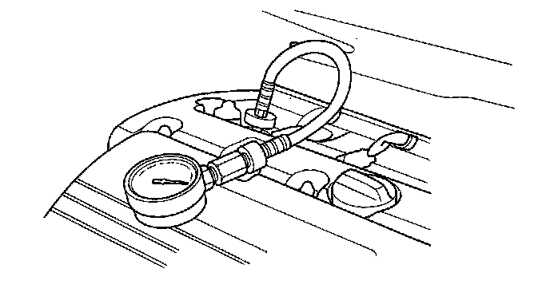

Compression Check: Testing and Inspection
Engine Compression InspectionNOTE: After this inspection, you must reset the engine control module (ECM), otherwise the ECM will continue to stop the injectors from functioning.
1. Warm up the engine to normal operating temperature (cooling fan comes on).
2. Turn the ignition switch OFF.
3. Connect the HDS to the data link connector (DLC).
4. Turn the ignition switch ON (II).
5. Make sure the HDS communicates with the vehicle and the ECM. If it doesn't troubleshoot the DLC circuit.
6. Select PGM-FI, INSPECTION, then ALL INJECTORS OFF on the HDS.
7. Remove the four ignition coils.
8. Remove the four spark plugs.
9. Attach the compression gauge to the spark plug hole.

10. Open the throttle fully, then crank the engine with the starter motor and measure the compression.
Compression Pressure:
Above 930 kPa (9.5 kgf/cm2, 135 psi)
11. Measure the compression on the remaining cylinders.
Maximum Variation:
Within 200 kPa (2.0 kgf/cm2, 28 psi)
12. If the compression is not within specifications, check the following items, then remeasure the compression.
^ Damaged or worn valves and seats
^ Damaged cylinder head gasket
^ Damaged or worn piston rings
^ Damaged or worn piston and cylinder bore
13. Select the ECM reset to cancel the ALL INJECTORS OFF function on the HDS.